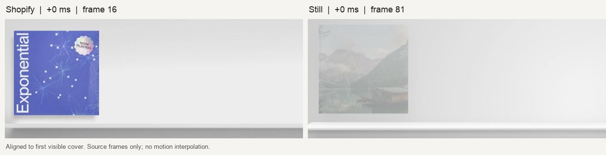
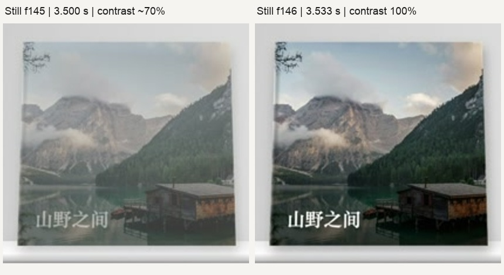
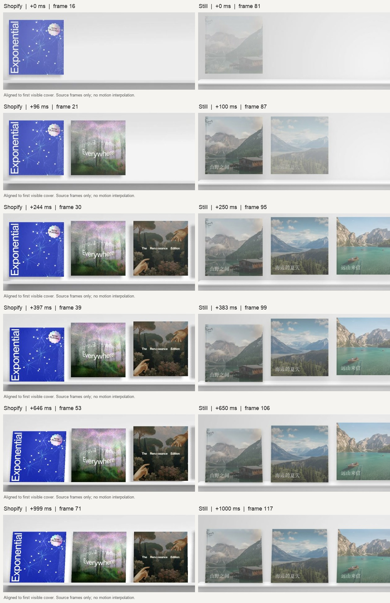

2026-11-15 · 实测帧与代码交叉核对节奏接近，禁用态淡化是最明显的差异。
第一本封面约用 400 毫秒落下，之后继续靠稳，两边的分段节奏基本吻合。客户端封面落定后仍保持约 70% 的对比度，直到整批动画结束才在一帧间恢复正常；这比缓动曲线的小差异更影响观感。
本轮只录制和分析，没有修改生产动画。客户端素材来自真实窗口录屏，不使用上一轮的视图缓存导出。网页素材是浏览器连续截图序列，有逐帧时间记录，不是恒定帧率录屏。
按第一本封面出现时刻对齐
左侧为 Shopify，右侧为 Still。搁板接触线已对齐，保留各自封面像素尺寸。拖动查看，或逐帧前进。回放帧率为 30 fps，取最近实测帧，不生成中间运动。

网页高密度采样来自上一轮连续捕获的 80 帧，原始区间 0–1597 ms，第一本首次可见在第 16 帧、约 463 ms。原生首次可见在第 81 帧、视频 1.533 s。对齐后超过 1134 ms 时，左侧明确停留在最后捕获帧；右侧继续播放，以展示约 +2000 ms 的变亮跳变。不同轮次的启动延迟不用于比较。
具体看到了什么
| 阶段 | 网页 | 客户端 | 判断 |
|---|
| 封面出现前 | 墙面、架子先渐显，随后封面逐本出现。 | 重播后墙面和架子已完整可见，只隐藏封面。 | 缺少环境渐显，入场层次不同。 |
| 出现至约 +250 ms | 封面清晰出现，前段停留接近悬空，后段加速。 | 有额外的短淡入，封面持续发灰；也表现为先慢后快。 | 运动方向和分段接近，透明度处理不同。 |
| 约 +400 ms | 首本下边缘约从 y=295 到 312，下降 17 px；初始边长约 177 px。 | 首本下边缘约从 y=412 到 434，下降 22 px；初始边长约 185 px。 | 归一化下落约 9.6% 对 11.9%，客户端幅度略大。是图像测量，含像素和时间采样误差。 |
| 约 +650–800 ms | 接触线基本不动，上部继续向后靠，保留场景透视。 | 也有接触后靠稳的第二段；逐本独立透视更接近居中的梯形。 | 应对照最终四角和接触线调整，不能只替换一个旋转角度。 |
| 约 +2000 ms | 没有原生这种等待所有封面完成后统一变亮的阶段。 | 第 145 帧仍发灰，第 146 帧突然恢复颜色。 | 最优先处理。与整组按钮禁用态一致。 |
| 落定材质 | 白色搁板上有封面反射，接触处的阴影与墙面阴影分离。 | 主要是封面自身投影，搁板反射缺失。 | 这是实体感的另一处差异，单调时间曲线无法补足。 |
一帧间的变亮

原生第 145 帧时间为 3.500 s，第 146 帧为 3.533 s。对已经落定的同一封面区域，以空架子和正常封面为参照拟合，前一帧约为 0.703，后一帧约为 1.000。这是颜色混合的近似估计，不是读取 SwiftUI 内部 opacity。
代码将相册按钮统一设置为 .disabled(!entranceFinished)，直到最后一本靠稳才启用。它与录屏中的禁用态淡化和同时恢复相符。尚未做移除禁用态的 A/B 录制，因此这条因果解释来自代码与画面的交叉判断。
关键帧总览

原始录制与来源
原生 MOV 为 2722 × 1914，包含窗口边缘和阴影，7.15 s 内解码出 305 帧；不是固定 60 fps。分析图将其缩小至 1360 × 956。网页为 1280 × 720；合成 MP4 仅供回放，定量对齐使用原始 JSON 时间表。截图调用起始时间不是精确显示时刻，不能据此判断十几毫秒的延迟差异。画面不同，未做跨图片的亮度比较；约 70% 的结论只来自同一原生封面的前后比较。
这一轮另采了网页 13 帧、32 帧、10 帧三个序列，分别保存于 web-frames、web-active-frames、web-detail-frames。它们确认效果仍在，但截图间隔较大，主分析采用已保留的高密度序列。客户端的系统录屏有失败尝试；分析使用成功的 native-replay.mov，不使用只录到静态画面的第一条视频。
参考：Shopify Editions 页面。公开模块的下落时间为 400 ms、出现错峰为 75 ms；旋转在下落开始 240 ms 后启动。网页局部后倾为 −0.26 rad，原生为 9°，两边相机与投影不同，角度不能直接等同。
建议的修改顺序
- 保留入场期间的交互拦截，避免使用会改变封面颜色的禁用态。这一项应做前后 A/B 录制。
- 补上墙面与架子的入场渐显，再把下落幅度从封面边长约 12% 收到约 10%。
- 根据最终四角位置校准整体透视，再增加接触阴影与搁板反射。
现有 400 ms 下落和延后靠稳的分段可以保留，暂不优先重写缓动曲线。
测量数据：颜色拟合 · 对照帧映射。自动边缘测量受阴影影响，最终下边缘数值使用封面与背景的亮度突变位置，未把阴影边缘当成封面边缘。